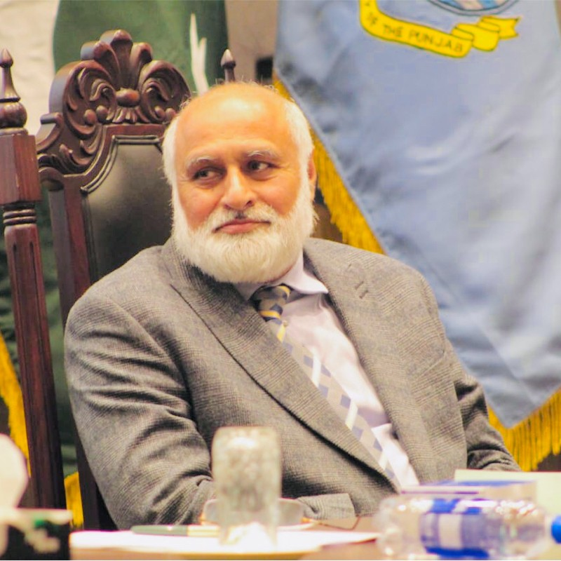
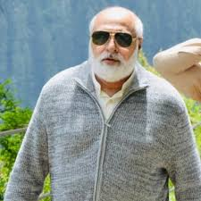
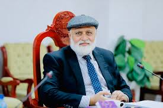
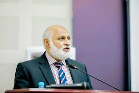

Akhtar was born on 15 June 1962 in Basti Dosa, Dera Ghazi Khan.He has an
undergraduate and a master's degree in chemical engineering from the
University of the Punjab, Lahore. He did his doctorate in chemical
engineering from the University of Leeds, UK in 1995.



